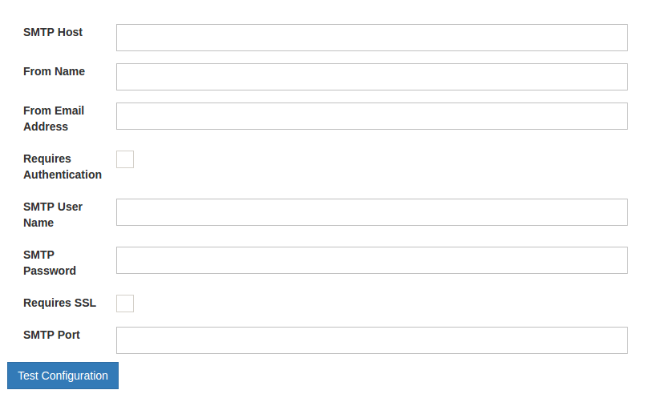
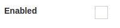
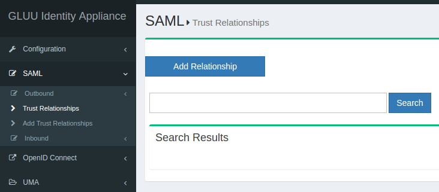
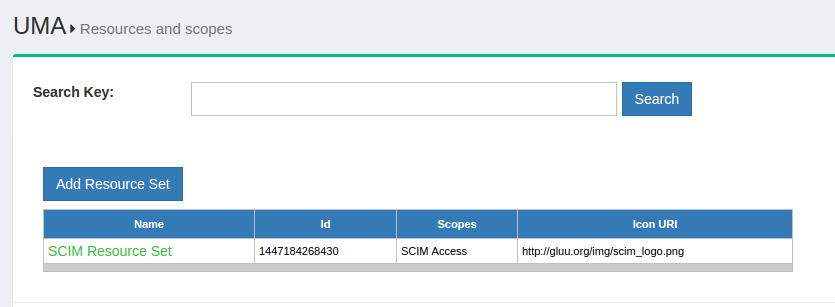

Gluu Server Administrative Interface#
The administration interface (oxTrust) is accessible from the hostname provided in the prompt from the setup script. After the installation is complete, log in to the web-based interface with the username admin and the LDAP superuser password.
Welcome Page#
The administrator is taken to the welcome page if the username and the password is correct. Some basic information about the VM/server is displayed in the welcome screen. The version is displayed on top followed by free memory,disk space. The health of the VM/server can be easily determined from the welcome page. There is a photo icon on the right hand top side of the page which can be used to navigate to the user-profile and logging out of Gluu Server CE.

The menu on the left side of the welcome page is used to navigate the admin interface for Gluu Server. The menu has separate buttons for SAML, OpenID Connect and UMA. The user-management menu is found under Users and the user-profile is under Personal.
Configuration#

The configuration tab contians the tools to configure Gluu Server CE. This section is dedicated to all tuning and tinkering except integration tools. The configuration menu is divided in to other sections which are revealed on click. The administrator can manage authentication, registration, attributes, cache-refresh,logs etc. from this menu.
Organization Configuration#
There are three sections in the organization configuration page which are System Configuration, SMTP Server Configuration and OxTrust Settings. These sections are detailed below with screenshots.

System Configuration
Gluu Server CE is shipped with a built-in White Pages feature which can be enabled from the system configuration page. This page also contains the options to enable Self-Service Password Reset which allows the Gluu Server users to reset their password via email. This options depends on the SMTP Server Configuration, also available under the organization configuration page. Additionally the SCIM Support can be enabled from the System Configuration page. If the organization uses any custom DNS Server(s), the address should be updated from the System Configuration interface. Maximum Log Size (MB)*, by default Gluu UI will have 200 mb as the size of the log file and this value could be manipulated according to the administrator. Either this value could be increased or decreased depending on the HW specifications and contingency plan of the environment.

SMTP Server Configuration The mail server used by the Gluu Server to send notification to the pre-selected email address is configured in this page/panel. All the fields in this page are manadory and the configuration can be tested before confirmation. The fields are self-explanatory and simple such as hostname, user, password, ssl-requirement, authentication requirement, sending name and address. 
OxTrust Settings Some basic information abouht the administrator interface is available in this page. The administrator can find out the oxTrust build date and number by accessing the oxTrust settings page. The administrator can change the organization name, logo and favicon settings from this page as well. Finally oxTrust Settings page contains the name of the administrator group for Gluu Server. The users added in this group will have administrator access in Gluu Server where they will be able to maintain/configure the server.

JSON Configuration#
The configuration files are accessible from the administrator interface (oxTrust). There are three tabs under the JSON Configuration menu
The oxtrust JSON configuration file is accessible from this tab and it can be edited from this page. The changes are updated by clicking on the Update button on the bottom of the page.
The oxAuth JSON configuration page gives easy access to the different endpoints used by Gluu Server CE. This page also contains the supported response, grants and algorithms among other information. The details will follow later on this documentation.
The oxTrust Import Person Configuration page contains the configuration for the file method of importing users into Gluu Server CE. The administrator can import users from a xls file which must be defined in this tab to import data in the LDAP attributes. The default format should contain the following fields
Manage Authentication#
The Manage Authentication page contains the internal OpenDJ settings for Gluu Server CE. The Default Authentication Method defines the authentication mechanism used for general authentication and oxTrust authentication. The separation is introduced because the users logging into Service Providers (SP) do not see the administrative console. The oxTrust authentication mode decides the authentication mechasims for the users logging into the oxTrust admin interface.
Manage Custom Scripts#
It will not be an understatement to say that the custom script feature makes Gluu Server CE so robust and dynamic. The scripts are available for all intents and purposes the major being multi-factor authentication. There are many custom scritps included with the vanilla Gluu Server CE which can be enabled by clicking the check box.

The details about the custom scripts are given later in this guide.
Manage Registration#
Gluu Server CE is shiped with the feature to register users via the user-registration endpoint. The registry feature contains a Captcha which can be disabled from this page. Additionally it is possible to enable registration configuration from attributes.
Attributes#
The attributes that are avalaible in the Gluu Server CE is found in this page. The administration can only see the active attributes when this page is accessed. The Show All Attributes button will show the inactive attributes too. Custom attributes can be added by clicking the Add Attribute button and filling up a simple form.
Cache Refresh#
Cache Refresh is the mechanism used by Gluu Server CE to import users from a backend LDAP/AD data source. The entire configuration is handled from this page. The Cache Refresh will notify the administrator of any problem with cache refresh the last time it was run. The frequency of cache refresh is also set from this page with the Polling interval (minutes) form. The key attributes, object class and the source attributes can be defined from the Customer BackendKey/Attributes tab. The backend server address, bind DN and other information must go to the Source Backend LDAP Servers tab.
Configure Log Viewer#
The logs for oxauth, oxtrust, cache refresh and the tomcat log can be configured from this tab. The log paths are given with the functionality to define any new log template with log file path.
View Log File#
The log files are listed in the View Log File page under the Allowed Log Files tab. The individual logs can be tailed by clicking them. The Configuration contains the last line count which will show the number of lines specified from the log in the Tail of Log File tab. This section is an alternative to getting into the Gluu chroot and tailing the log files.
Server Status#
This page will give some basic information about the Gluu Server such as the hostname, IP address, free memory & disk space. The number of users in the backend is also available in this page.
Certificates#
The certificate page will give the certificate information for Gluu Server. The issuer info along with the algorithm used and the expiry date is also available.
SAML#
Gluu Server CE contains all SAML related functionalities under the SAML tab divided into outbound and inbound SAML transactions. Inbound SAML is also known as ASIMBA.
Outbound#

The Trust Relationships page, as the name suggests, will allow the administrator to view the created trust relationships (TRs) by searching using the search button. There is a button to add relationship with the same name. All the available TRs can be searched by using two (2) spaces in the search bar. There are some information that the administrator needs to gather before creating any new TR in Gluu Server. The metadata of the Service Provider (SP) connected using TR must be gathered along with the required attributes. The creation of TR will be covered in detail later.
OpenID Connect#
OpenID Connect is another protocol supported by Gluu Server CE following the openID Connect specifications. The scopes page contains the Add Scope button which can be used to add new scopes in Gluu Server. Additionally the available scopes can be searched by name or listed using two (2) spaces in the search bar.

The OpenID Connect clients are accessible from the Clients page under OpenID Connect tab. The structure is similar to the scopes page with the functionality to search by name or use two (2) spaces to list all the available clients. New clients can be added by clicking the Add Client button.

UMA#
UMA or (User-Managed Access) is an access management protocol supported by Gluu Server.The available scopes can be searched using the search bar on the top of the page. New scope descriptions can be added using the Add Scope Description button.

UMA resources page also has a searchbar on the top of the page and can be used to search for resource sets. New resource sets can be added by clocking on the Add Resource Set button.

Users#
Users tab allows Gluu admin to do various task, including add admin, search users, Import users from file.
Personal#
Personal tab allows the individual person to view his basic profile and modify certain fields.